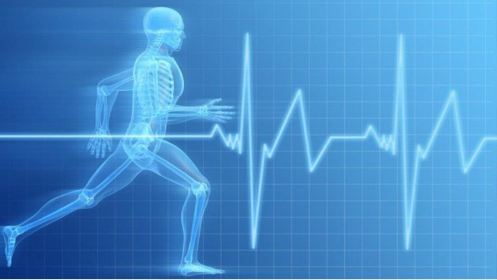

Como a má alimentação interfere em práticas físicas

Se o organismo não tem energia para se movimentar e se o corpo não carrega os nutrientes e vitaminas para metabolizar a gordura, a qualidade da atividade física é reduzida. Ao deixar de comer antes de praticar qualquer atividade física ou fazer jejum sem o acompanhamento de um profissional qualificado, o sangue diminui os níveis de açúcar e perde eficácia, dando suporte para o desenvolvimento de incômodos físicos, como hipoglicemia, sudorese fria, palidez, tremores, palpitações e desmaios. Dessa forma, a má alimentação pode impactar negativamente a prática de atividades físicas de várias maneiras. Aqui estão alguns dos principais efeitos:
Desempenho Reduzido
Energia Insuficiente: Uma dieta pobre em carboidratos e calorias pode resultar em baixos níveis de glicogênio, essencial para fornecer energia durante o exercício.
Fadiga Precoce: A falta de nutrientes adequados pode levar à fadiga precoce e reduzir a capacidade de sustentar o esforço físico.
Recuperação Comprometida
Recuperação Lenta: A ausência de proteínas e nutrientes importantes, como aminoácidos, vitaminas e minerais, pode atrasar a recuperação muscular e o reparo dos tecidos após o exercício.
Risco de Lesões: A má nutrição pode enfraquecer músculos e articulações, aumentando o risco de lesões e distensões.
Menor Massa Muscular
Deficiência de Proteínas: A falta de proteínas adequadas pode impedir o crescimento e a manutenção da massa muscular, essencial para o desempenho atlético.
Catabolismo Muscular: Sem ingestão adequada de nutrientes, o corpo pode começar a quebrar tecido muscular para obter energia.
Impacto na Composição Corporal
Ganho de gordura: Uma dieta rica em calorias vazias e açúcares pode levar ao ganho de gordura, o que pode prejudicar o desempenho e a eficiência física.
Perda de massa magra: Dietas desequilibradas podem levar à perda de massa magra, afetando a força e a resistência.
Problemas de Hidratação
Desidratação: A má alimentação pode não fornecer a quantidade necessária de água e eletrólitos, essenciais para a hidratação e o funcionamento adequado dos músculos.
Desempenho Afetado: A desidratação pode causar cãibras, fadiga e diminuição do desempenho físico.
Impactos na Saúde Geral
Sistema Imunológico Enfraquecido: Uma dieta inadequada pode enfraquecer o sistema imunológico, aumentando o risco de doenças e infecções que podem interromper a prática regular de exercícios.
Problemas Digestivos: A má alimentação pode causar desconfortos digestivos que dificultam a prática de exercícios físicos.
Desmotivação e Estado Mental
Níveis de Energia Baixos: A baixa energia devido à má alimentação pode afetar a motivação e o desejo de se exercitar.
Humor e Motivação: A deficiência de nutrientes pode afetar o humor e a disposição para se engajar em atividades físicas.
Para maximizar o desempenho físico e a recuperação, é crucial manter uma dieta equilibrada que suporte suas necessidades energéticas e de nutrientes, especialmente se você estiver envolvido em atividades físicas regulares ou intensas.